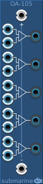

The AG-105 provides 5 Operational Amplifiers with shared +ve and -ve rails.
Each op-amp has a pair of inputs. If the voltage of the upper input is higher than the voltage of the lower input, the output will be the +ve rail voltage.
If the voltage of the upper input is not higher that the voltage of the lower input, the output will be the -ve rail voltage.
It can be used as a comparator.
The voltage range of the digital gates can be configured from the context menu. The device will output at the full range of the configured settings. The inputs will measure a logical high signal anywhere above the midpoint of the configured range.
If no voltage is connected to the +ve rail input, the standard digital suite high voltage will be used.
If no voltage is connected to the -ve rail input, the standard digital suite low voltage will be used.
The digital suite high and low voltages can be configured from the context menu.
The OA-103 provides three Operation Amplifiers in a small form factor. Otherwise functionality is as for the OA-105 above.